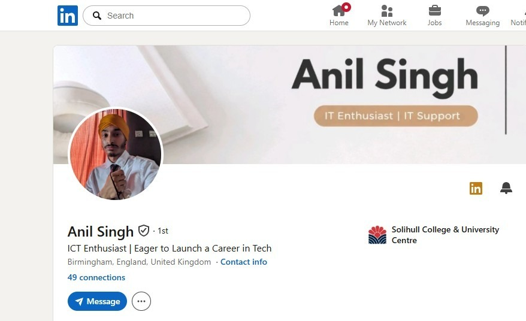

Welcome to my portfolio. This collection highlights my journey into the IT and networking world, showcasing my skills, experiences, and achievements so far. Inside, you'll find examples of my career projects, mini-labs, and hands-on exercises, including cloud management, virtualisation, and cybersecurity work. These projects have helped me develop practical IT skills, problem-solving abilities, and an understanding of how systems work in real-world environments.
Alongside technical skills, I've focused on professional development, improving my communication, articulation, and ability to explain technical concepts clearly. My career goal is to become a Network Engineer, and this portfolio reflects the steps I'm taking to achieve that goal — from gaining foundational IT support experience to learning advanced networking concepts.
Overall, this portfolio demonstrates my progress, learning, and ambition. It shows not only my technical capabilities but also my dedication to professional growth and my drive to succeed in a career in IT and networking.
My full bootcamp evidence and project submissions are available on the TDM platform:
https://ep.tdm.co.uk/view/view.php?id=26605Growing up, I was always the person my household turned to for technical problems. Whether it was fixing devices, setting up WiFi, or troubleshooting small issues, my family relied on me. Even solving minor problems made me feel proud and valuable.
Over time, this naturally developed into an interest in IT, though I didn't fully realise it was my true passion at first. I went through different jobs, and one day someone said, "You're good with technology, why haven't you made a career out of it?" That question made me reflect — I realised I had been following normal career paths instead of pursuing what I was naturally good at.
I'm interested in tech because I enjoy problem-solving and structured thinking. I like understanding how systems work and finding logical solutions when things go wrong. Technology gives me focus, clarity, and the satisfaction of creating tangible results from knowledge and effort.
I'm here today in this skills bootcamp because I want to succeed more than ever. My dad never got to see me have a career, and personally, I felt I wasn't fulfilling my potential. Now that he's gone, I feel even more driven.
I wish I could have shown him what I could do when he was here, and now it feels like my duty — to him and to myself — to make this count. This bootcamp is not just about learning IT; it's about proving to myself that I can build the career I should have started earlier.
I bring dedication, hunger to learn, and a genuine passion for technology to everything I do. I am committed to growing into a skilled Network Engineer and contributing meaningfully to any organisation I join.
I'm currently doing a Skills Bootcamp with the Development Manager in Tech and Cyber. We're covering hardware, networking, operating systems, and security — some of the most important and fast-growing areas in technology today.
My short-term goal is to secure a role in IT support, building strong practical foundations. My long-term goal is to become a Network Engineer, working with networks and infrastructure to keep systems running smoothly and securely.
This bootcamp is giving me the knowledge, hands-on experience, and confidence to work toward that goal step by step.
What I learned:
I spent time researching different tech roles — especially networking, IT support, and data. I practised summarising job descriptions and identifying the skills employers look for: problem-solving, logical thinking, and technical know-how. I also researched companies to understand what they value in their IT and networking teams.
What I now understand better:
Moving into networking requires both hands-on experience and strong foundations. Doing IT support tasks and small technical challenges now will make it much easier to step up into network-focused roles later.
A solid starting point for my goal of becoming a Network Engineer is to first build experience in IT support. This provides a strong foundation, improves future career progression, and ensures I develop the practical skills that networking roles require.
I am also expanding my industry knowledge by reaching out to employers for career advice, joining IT communities such as Reddit, and connecting with professionals in the field. This helps me understand real-world challenges and stay up to date with industry developments.
Articulation
I am actively improving my articulation by reading widely and practising communication techniques. Clear communication is essential in networking roles — whether explaining a technical issue to a colleague or presenting a solution to a client. This ongoing development is improving my confidence, structure of thought, and professional presence.
During a cloud fundamentals course, I needed to deploy a small virtual environment for testing applications.
Set up virtual machines, configure user access, and ensure secure data storage.
Used AWS and Fujitsu cloud tools to create virtual machines, assigned roles and permissions, implemented access restrictions, and tested connectivity and backup processes.
Project completed successfully with secure VMs running as intended. Developed skills in cloud management, virtualisation and practical IT support.
In an online cybersecurity module, I was tasked with protecting a small system against potential threats.
Identify vulnerabilities and implement security measures to reduce risks.
Applied basic security configurations — strong passwords, firewall rules, and account access controls. Ran tests to check for potential breaches and fixed issues that arose.
System passed all security tests. Gained practical experience in cybersecurity practices and risk management.
During virtual IT training, I was asked to design a small office network and ensure devices could communicate securely.
Set up the network, configure VLANs, assign IP addresses, and implement basic security measures.
Used Cisco Packet Tracer to simulate the network, configured VLANs and routing, set up firewall rules, tested connectivity, and documented the configuration for future troubleshooting.
Network ran successfully with no connectivity issues. Developed confidence applying networking and cybersecurity concepts practically.
Used open and closed questions to understand the problem, connected the printer to WiFi, installed the app, and verified operation. Improved troubleshooting, communication, and professional problem-solving skills.
Wrote simple Linux scripts for file management and calculations. Debugged commands that didn't initially work, building confidence and a logical approach to problem-solving.
Created a network diagram of my home network, mapping devices, connections, and IP addresses. Built a better understanding of network structure and device communication.
Logged into my home router in admin mode, reserved IP addresses for multiple devices, adjusted DHCP settings, reviewed firewall options, and tested connectivity.
Network configuration · IP management · DHCP · Device prioritisation · Security review
Designed and specified 5 PC builds for: 3D Digital Designer, Graphics Designer, Sales Manager, and 2× Sales Administrator. Selected CPU, RAM, GPU per role; compared Intel vs AMD and SATA SSD vs NVMe M.2; calculated costs via PCPartPicker.
Hardware compatibility · Workload matching · Budget planning · Performance comparison
Covering hardware, networking, operating systems, and cybersecurity. Hands-on labs in cloud management, virtualisation, Linux scripting, and network simulation using Cisco Packet Tracer.
Add a brief description of your studies, key modules, or achievements here.
Subjects studied and any notable results or achievements.
.jpeg)
.jpeg)
.jpeg)
.jpeg)
.jpeg)
.jpeg)
.jpeg)
.jpeg)
.jpeg)
Whether it's an opportunity, advice, or a conversation about networking — I'm happy to hear from you.